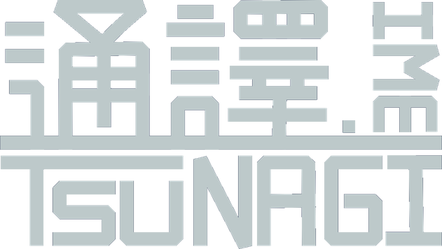
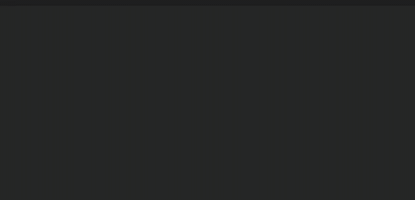
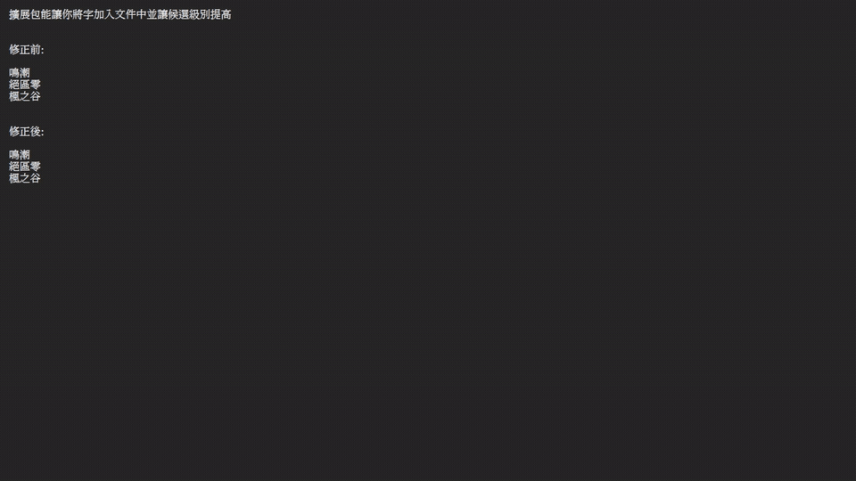
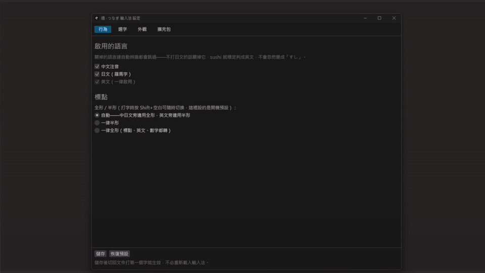
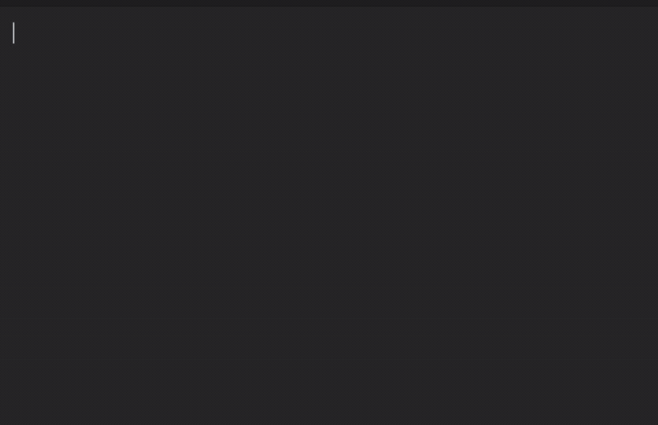
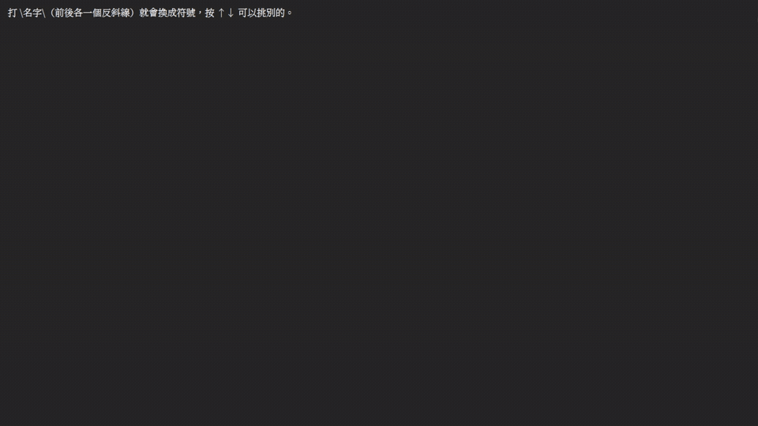

注音、日文羅馬字、英文，同一個輸入法、同一串按鍵。
通譯會邊打邊判斷你在寫哪種語言——不必按切換鍵，
也不必對著一串 rup wu0 狂按退格。
v1.1.0 · 免費開源 · 改下載 macOS 版
三種語言，一次搞定
引擎先看每一段按鍵在哪種語言裡「拼得通」，再從所有說得通的切法裡，挑最像你要的那一個。 中間夾一個英文單字、句尾接一段日文，都不用停下來切換。
su3cl3→你好標準大千排列，照你平常的打法就行。同音字會看前後文來挑，ㄣ／ㄥ 這類常見的混淆也容得下。
watashihagakuseidesu→私は学生です拼法跟一般日文輸入法一樣，整句轉成漢字假名混寫。動詞變化認得出原形，轉換不會卡在活用上。
hello→hello認得出是英文單字就原樣放行，不會被拆去湊注音或假名。自己加進擴充包的詞也算數。
實際打起來

猜錯了也不怕
混著打，總有猜錯的時候。像 loggerul4 想打「logger ㄨㄞˋ」，
引擎卻切成 log＋geru＋l4。
按 Tab 會反白其中一段，底下列出這段所有可能的讀法：長一點、短一點、換一種語言，全都在同一張清單裡。 不用先想「是切錯還是認錯語言」，看到要的就挑。
選好按 Enter，前面鎖住、後面重新算——已經定下的，不會再被翻掉。
macOS 的全半形是 ⌘+Shift+空白。滑鼠直接點候選也可以。
細節

角色名、遊戲術語、工作上的縮寫，做成一份詞表就好。在設定頁直接加詞，存檔馬上生效，不必重開。 加進來的英文詞還會影響「這串是不是英文」的判斷。現成的包在 Tsunagi-packs。

顏色、樣式都能調，還能放背景圖。主題存成純文字檔，做好一套直接傳給朋友就能用。
在輸入框打「設定」再按 ↑↑↓↓，設定頁就開了。 打語言名稱配同一組手勢，可以直接開關那個語言。

中文句子後面出全形，英文後面出半形。拿不準的符號像選字一樣往下挑——連打三個句點，也能換成刪節號「…」。

用反斜線把名字包起來：\star\、\hoshi\，或用注音打「星」，都會變成 ★。
名字用哪種語言打都行。沒挑就維持原樣，所以打 C:\star\file 這種路徑不會被吃掉。
只打中英文？把日文關了。關掉的語言完全不參與判斷，剩下的猜得更準，也不會冒出一堆用不到的假名。
ㄣ／ㄥ、ㄓ／ㄗ、ㄔ／ㄘ、ㄕ／ㄙ 分不清也沒關係。打偏的注音會在預覽列直接改正，改了哪裡看得一清二楚。用不到可以關。
你改過的字會慢慢記住，改越多次越優先。刻意不做「選一次就置頂」——免得手滑選到一次生僻字，常用字就再也回不來。
隱私
在密碼欄位裡完全不介入、不學習，按鍵原封不動交給程式。
輸入內容和學習紀錄都只存在本機，沒有任何雲端同步。
看起來像帳號、電話、卡號的內容，不會寫進學習紀錄。判斷看內容本身，不靠欄位標記。
唯一的連線是檢查有沒有新版，不帶個人資料。設定頁可以關掉，關了就完全離線。
安裝
目前版本 v1.1.0。安裝程式只含輸入法本體，台語等語言包另外到 Tsunagi-packs 下載，放進擴充包資料夾就能用。
解除安裝走「設定 → 應用程式」，註冊與資料夾會一併清掉。
習慣終端機的話，也可以先跑 xattr -dr com.apple.quarantine 加上安裝檔路徑，拿掉隔離標記再安裝。
舊版本與更新紀錄在 GitHub Releases。